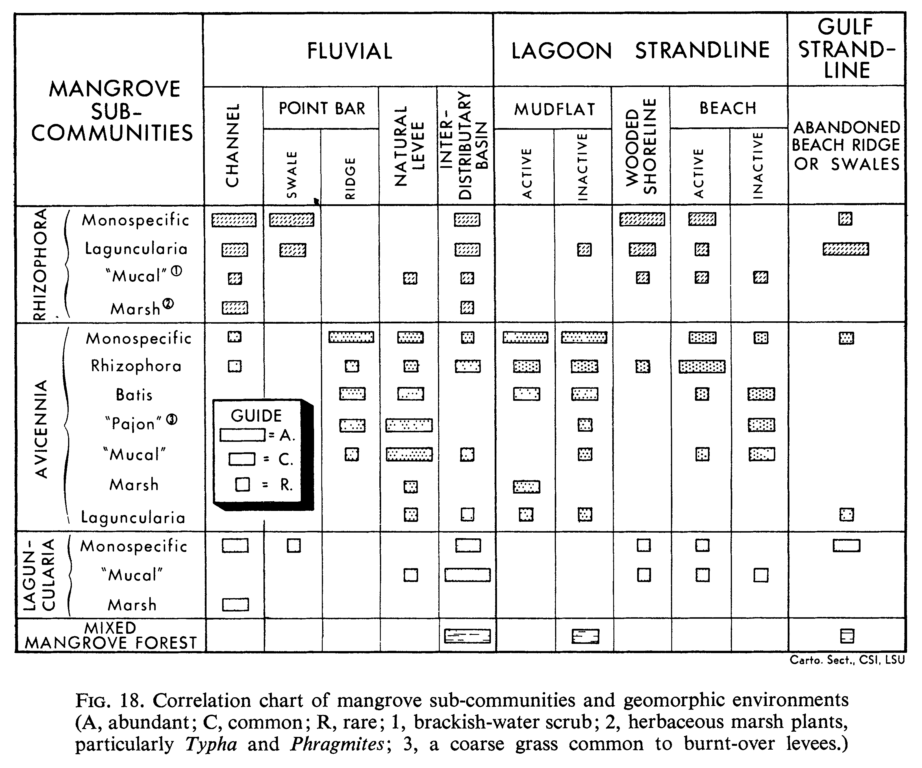
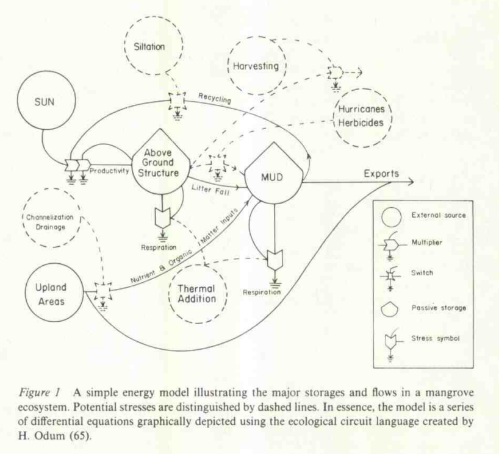
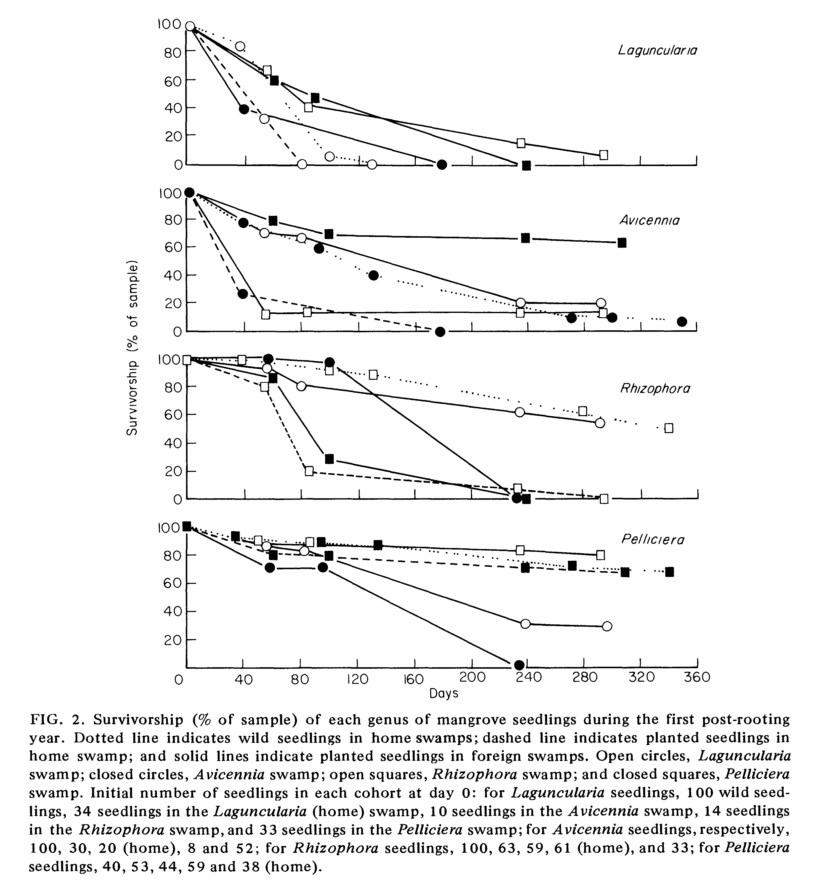
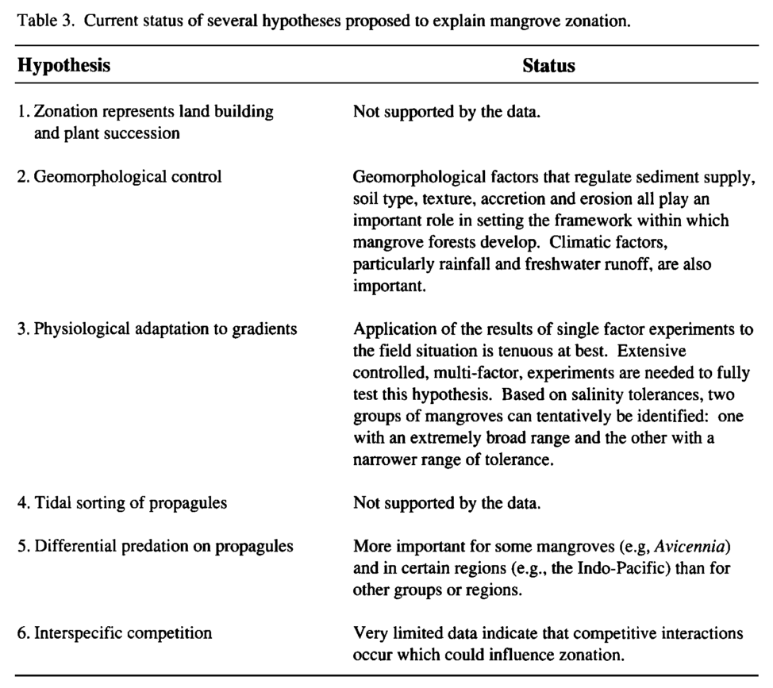

3.1 Zonation & disturbance
3.1.1 Preface
Establishment of monospecific stands of mangrove trees in zones parallel to shorelines (zonation) has been among the most well-studied phenomenon in mangroves. Several hypotheses attempting to explain zonation in mangroves have existed throughout time, each of which has been supported to varying degrees within the literature:
Zonation as mangrove succession due to land building - Davis, 1940:
- From his work in Florida, Davis believed that mangroves promoted shoreline progradation, which was followed by establishment of Avicennia germinans species in the most seaward portion of the intertidal zone. Eventually Rhizophora mangle with a few Laguncularia racemosa individuals would outcompete A. germinans as the shore (and thus habitat for A. germinans) continued to prograde. Davis believed that the zones of species were a successional process, eventually climaxing in a terrestrial forest dominated by non-mangrove species. [Not supported]
Zonation as response to geomorphic condition - Thom, 1967:
- Thom did his field work in a composite lagoon and riverine system in Tabasco, Mexico, and provided one of the first most comprehensive sets of evidence against Davis’s hypothesis of zonation as mangrove succession. In looking at the different habitats in which mangrove tree species existed, Thom concluded that zonation of species was in response to the hydrological and substratum conditions of a site, which were ultimately variables controlled by geomorphic processes. As a result, he concluded that spatial patterns of mangrove species were in response to geomorphic changes in the land rather than mangrove species inducing patterns in geomorphology (and thus species zonation was relatively “stable”). [Supported]
Zonation as adaptation to physico-chemical gradients - Watson, 1928; Davis, 1940; Macnae, 1968; Ball 1988:
- One of the more commonly examined hypotheses for examining species zonation and investigated by a wide range of researchers. Watson’s “inundation classes” and discussion of salinity may be one of the earliest, well-cited references to environmental gradients. The hypothesis holds that mangrove species have adapted to establish or compete in microenvironments that exist along environmental gradients. Given the dynamic nature of mangrove ecosystems, it is unlikely that mangrove species specialize to unique microenvironments, but more likely exhibit tolerance to a wide range of conditions. However, some may preferentially outcompete others in environments towards the ends of gradient spectrums, and thus ecophysiology may play an important role in competition and survival or growth following establishment. [Supported, for particular considerations]
Zonation as result of interspecific competition - Clarke and Hannon, 1970:
Zonation due to tidal sorting of propagules - Rabinowitz, 1978:
- Upon investigating no significant difference in survival and growth rates of Avicennia, Rhizophora, Laguncularia, and Pelliciera tree individuals planted in monospecific stands in Panama, Rabinowitz concluded that mangrove zonation is not primarily controlled by physiological variables. In response, she hypothesized that the zonation of species may be due to differences in propagule size and weight between species. The hypothesis posits that differences in size and weight have enabled species to establish in areas with different tidal regimes (smaller propagules in shoreward zones, larger propagules in landward zones). Rabinowitz provides a discussion of the hypothesis and identifies several other studies that may support the hypothesis. [Partially supported - directionality NOT supported whereas tidal depth supported]
Zonation as result of differential predation on propagules - Smith, 1987:
- (Smith 1987) was among the first studies to experimentally test the existence of differential rates of propagule predation by grapsid crabs for different mangrove tree species. His results showed that differential rates of mangrove predation did exist for the distinct species, and were correlated to the nutritional content (e.g., presence of tannins, simple sugars, etc.) of the species. Furthermore, he found a significant negative relationship between species dominance and rate of propagule predation, which led him to conclude that differential rates of propagule predation influence the zonation of species in mangroves. Perhaps most clearly, he found that A. marina was consumed heavily within the mid-intertidal region of the forest, in which no parent trees of A. marina exist. Smith notes that no single hypothesis is likely to explain all of zonation, but that the results of his study are significant and parallel those of other studies in terrestrial forests. [Partially supported]
Several comprehensive reviews of zonation in mangroves are provided in:
3.1.2 Thom, 1967
“Mangrove ecology and deltaic geomorphology: Tabasco, Mexico” (Thom 1967)
Key contribution: Thom’s work in the lagoons and riverine settings (“composite river & wave-dominated”) of Tabasco, Mexico was one of the most well-cited examples against Thom’s hypothesis of mangrove succession. In looking at the different hydrological regimes and substratum of various mangrove “zones,” he concluded that mangrove zonation in species was in response to geomorphic condition and was relatively stable in time (as opposed to altering landscapes and facilitating succession).
Thom generally concluded that mangroves were opportunistic in their establishment, but particular species do have the capabilities to affect the rates at which geomorphic processes occur such as prop roots of Rhizophora spps. choking tidal channels.
The following chart details the presence of different stand types within the geomorphic settings of Tabasco, Mexico.

Key findings: Thom’s findings provided evidence that:
- Mangroves establish in areas of naturally accreting soil, but facilitate accretion of soil upon establishment (e.g., Rhizophora choking creeks & channels).
- Mangroves are opportunistic in their establishment, largely responding to geomorphic conditions
- Thom went on to provide a series of geomorphic clastic and carbonate settings in which mangroves “generally” exist
Further reading:
- Thom 1982 - Identification of five geomorphic clastic settings
- Thom 1984 - Identification of three geomorphic carbonate settings
3.1.3 Lugo & Snedaker, 1974
“The ecology of mangroves” (Lugo and Snedaker 1974)
Key contribution: Lugo and Snedaker’s seminal work on the ecology of mangroves (in Florida) is most commonly cited for their definition of six mangrove forest types:
Fringe forest - Mangrove assemblages that are found on the fringes of sheltered coastlines. Zonation in species typically follows Davis’s patterns.
Riverine forest - Tall forests found in floodplains and along riverine systems of deltas and estuaries. These may occur in conjunction with “fringe forests,” are tidally flushed, yet have more complex hydrological influences from upland, freshwater sources.
Overwash forest - Forest types often consisting of Rhizophora species over low islands or small projections in bays and estuaries that are only inundated with high tides.
Basin forest - Mangrove assemblages that occur in the “basins” in between tidal channels and distributaries, or behind the levees of rivers and channels. Often among the most extensive sections of mangrove forests and may exhibit zonation with changes in elevation as the landward zone of the forest is reached.
Hammock forest - A variant of the basin forest occuring in fringe forests in areas of raised topography.
Dwarf forest - Mangrove forests that occur along flat coastal fringes and are stunted in growth (height) due to nutrient limitations.
In addition, Lugo and Snedaker provide a review of matter cycling in mangroves; however, more recent reviews of the topic have been written and should be referred to.
Lugo and Snedaker provide a conceptual model of energy flows in mangroves that should be reviewed:

3.1.4 Rabinowitz, 1978a
“Dispersal properties of mangrove propagules” (Rabinowitz 1978a)
Key contribution: This paper provides a review of propagule physiology and establishment for six species from Panama (L. racemosa, A. germinans, A. bicolor, R. mangle, R. harisonii, and P. rhizophorae). Rabinowitz reviews the different anatomy and physiology of the four genera, and then provides results from experiments on dispersal characteristics such as time of floatation, time to rotting and time to establishment.
Key knowledge: Mangroves are viviparous in that propagules go from parent tree to embryonic stage to establishment continuously without a “dormant” period. Propagules often sprout roots during the dispersal stage, which aids in their establishment.
Key finding: After her experiments, Rabinowitz found that smaller propagules from Avicennia and Laguncularia were less capable of sinking or establishing underwater, and thus are more likely to be limited to higher areas with periodic absences of tidal inundation (where they are characteristically found). The larger propagules of Rhizophora and Pelliciera are capable of sinking and establishing underwater, and thus are not limited in areas of establishment.
3.1.5 Rabinowitz, 1978b
“Early growth of mangrove seedlings in Panama, and an hypothesis concerning the relationship of dispersal and zonation” (Rabinowitz 1978b)
Study design: Examined growth and survival of R. harisonii. A. sps, L. racemosa, and P. rhizophorae in each of four monospecific parent swamps in different locations of Panama (i.e., four parent stands at each of four sites). Gardens of each of the four species were planted and examined for growth and survival to see if seedlings fared better in stands of their parent species.
Key findings: Rabinowitz examined establishment of four different genera (Avicennia, Laguncularia, Pelliciera, and Rhizphora) in stands of both their parent genus as well as others. Her findings were primarily:
- seedlings generally grew better in habitats of other mangroves than in own parents habitat
- growth of seedling largely equal across parents swamps
- superior growth (when present) typically seen in foreign swamp
- no habitat with greater growth across all mangroves
Thus, Rabinowitz found little evidence of the hypothesis that physiological conditions along a tidal gradient control mangrove zonation. The graph below shows survival of seedings of the four genera in the four different parent habitats.

Key contribution: In response to her findings, Rabinowitz provides the “tidal sorting” hypothesis, which posits that “mangrove zonation may be controlled by tidal sorting of propagules according to size and by differential ability of propagules to establish in deep water.”
She provides a discussion of the hypothesis as well as links it to several studies in the academic literature which support the notion.
Key limitations: The key limitations of the study is the length of the work (just one year), as well as consideration of only seedlings rather than saplings and seedlings. Ecophysiological controls on survival rates may not occur until later in time (in which competitive influences are stronger), and thus the conclusion that Rabinowitz gives may have been premature (see (McKee 1995)).
Further reading:
- Rabinowitz, 1978 - “Dispersal properties of mangrove propagules”
- Sousa et al, 2007
3.1.6 Putz & Chan, 1986
“Tree growth dynamics and productivity in a mature mangrove forest in Malaysia” (Putz and Chan 1986)
Key contribution: This study describes mangrove development and growth dynamics in a protected forest in Matang, Malaysia over the course of 60 years. The research represents one of the few studies done on mangroves over many decades, as disturbance regimes often prevent long-term succession as well as a lack of research interest.
Key findings: Several key findings in long-term mangrove development were identified:
- R. apiculata slowly decreased in forest dominance relative to B. gymnorrhiza and B. parviflora. Bruguiera species are more shade-tolerant and may represent a more traditionally “climax” class of mangrove species.
- Gap openings were largely caused by termites and fungus killing trees, which would fall against neighboring trees, damage roots and bark and allow termites to transfer trees. Putz and Chan describe the disturbance dynamics as “domino-like,” but also note it is unlikley to be “normal” disturbance dynamics.
- Based on growth-rates and age-class distributions, Putz and Chan conclude that self-thinning did occur within the forest, particularly for R. apiculata.
- Total biomass was relatively high, with “stable” biomass estimated at 350-400 Mg/Ha.
3.1.7 Smith, 1987
“Seed predation in relation to tree dominance and distribution in mangrove forests” (Smith 1987)
Key contribution: This is one of the earliest examinations of the effects of predation (by grapsid crabs) on propagule survival for different species. They found significant relationships between propagule predation and nutritional content, as well as location within the intertidal floor. The results led them to conclude that propagule predation is a significant factor in defining zonation in mangrove forests.
Experimental design: Propagules were tethered to twine strings and monitored over 18 days in 5 replicate plots in each of three forest types (high, intermediate and low conspecific dominance) for each of the five species. Additionally, propagules of each of the five species were analyzed for nutritional content and related to predation patterns using PCA.
Key results: The findings show that differential predation for certain species does occur. In particular, predation on A. marina in the mid intertidal was found to explain the relative absence of parent A. marina trees in the mid-intertidal section of the forest. Rates of predation of A. marina were found to be higher than in the low or high intertidal regions.
With the exception of Ceriops tagal, amount of predation was significantly negatively correlated with conspecific dominance (i.e., low dominance by parent trees led to high predation rates) across the other four species.
3.1.8 Smith, 1992
“Forest structure” (In Robertson and Alongi, 2002) (Smith 1992)
Overview: This chapter (from Robertson and Alongi, 2002) gives a broad overview of mangrove forest structure with a particular emphasis on zonation in species. Smith describes factors that influence species composition, the patterns of species assemblages across the intertidal zone, and physical forest structure attributes such as height or stem density.
Key knowledge:
- Mangroves lack understory vegetation commonly found within terrestrial tropical forests
- Species zonation patterns differ between “Old World” and “New World” tropics
- (???) primary zonation hypotheses:
- land building & succession
- geomorphology
- response to physico-chemical gradients
- tidal sorting hypothesis
- differential predation
- interspecific competition
- Many mangroves have even-aged size-class structure
- Stand height, density and biomass accumulation seem to correlate with climatic factors, particularly rainfall
- Mangroves appear to have more pioneer-phase traits (e.g., r-strategy dispersal of propagules) relative to mature-phase traits - which may support Thom, 1967’s hypothesis of “opportunistic” establishment.
Status of zonation hypotheses as of 1992:

Further reading:
- Chapman 1976 - Extensive review of early literature surrounding mangrove zonation
3.1.9 Chen & Twilley, 1998
“A gap dynamic model of mangrove forest development along gradients of soil salinity and nutrient resources” (Chen and Twilley 1998)
Key contribution: This study employs a FORMAN model to examine forest development and succession in South Florida across nutrient gradients. The study is novel in that it employs an individual-tree based model to examine different effects of recruitment, nutrient availability, and response to disasters (hurricanes) for R. mangle, A. germinans and L. racemosa.
Key findings: The study primarily examines i) species dominance (as measured by BA) in response to salinity and nutrient response surfaces, ii) regeneration following disturbance, and iii) long-term mangrove succession (500 yrs).
Key findings from each of the three model explorations are detailed below:
- nutrient gradients - BA didn’t increase linearly with increasing soil fertility, indicating that light or competition influence forest development; patterns of forest development varied depending on time scales (35 vs. 100 vs. 300 years). At 100-year time frame, patterns in species partitioning along resource gradients was observed.
- disturbance - equal sapling recruitment scenarios for all three species overestimated total basal area, which is indicative that recruitment rates are not equal amongst species;
- succession - long-term succession was found to be sensitive to recruitment rates for each species. The degree of shade tolerance/intolerance of the different species was concluded to be significant in long-term succession dynamics.
Research relevance: Can the same models be employed to look at shifts in forest structure due to sea-level rise?
3.1.10 Sherman et al, 2000
“Small-scale disturbance and regeneration dynamics in a neotropical mangrove forest” (Sherman, Fahey, and Battles 2000)
Key contribution: Sherman et al describe chracteristics of gap creation and closure through time and gap regeneration dynamics in the Dominican Republic. The primary intermediate disturbance at their site is lightning-induced gaps, with the forest regenerating from a large tidal wave several decades prior. Their evidence does not support the hypothesis that zonation in mangrove species is reinforced by gap regeneration, with R. mangle dominating gap regeneration in all three zone types.
Key findings: The following key findings are provided by the study:
- Hypothesis that species zonation is reinforced by gap dynamics was not supported by evidence
- R. mangle dominated gap regeneration, not due to increased density of seedlings (found to be highly variable with patterns emerging depending on dominant species zone), but due to higher survivorship in standing water; seedling & sapling growth found to be significantly greater in gaps than forest
- Gaps were characterized by a collapse of the peat-mat and thus regions of standing water
- Found that seedling and sapling density generally followed mature tree (by basal area) compositions for both transects
- Current spatial distribution of species zones is still unexplained for the site
NOTE Need to go back and figure out how long this study was performed for!
3.1.11 Sousa et al, 2007
“Supply-side ecology in mangroves: Do propagule dispersal and seedling establishment explain forest structure?” (Sousa et al. 2007)
Supply-side ecology: “hypothesis of community structure being influenced more heavily by supply of new individuals to a site rather than post-recruitment biotic interactions (Roughgarden by Lewin [1986])”
Tidal sorting hypothesis: TSH has multiple components:
- Dispersal of mangrove propagules is controlled primarily by their shape and size
- Establishment of mangrove propagules is differentiated by size and depth of tidal waters
Key contribution: Sousa et al provides one of the few empirical tests of the TSH. Their results by and large do not strictly support all components of the TSH:
- Direction (NOT SUPPORTED) - all propagules dispersed seawards, regardless of size
- Distance (SUPPORTED) - Laguncularia propagules travelled much further than Rhizophora or Avicennia
- trapping of seedlings behind logs or other barriers contributes to patchy establishment
- Establishment (SUPPORTED) - only Rhizophora established in the pen at the lowest tidal elevation, which is indicative that larger heavier propagules are better able to establish in deeper water (as TSH predicts)
Key findings:
- Directional flow of rainfall runoff overwhelms tidal flows and causes all propagules to disperse in a seawards direction
- Rhizophora seedlings moved very short distances, indicating that their commonly-believed widespread dispersal via marine systems may be misrepresentative of average dispersal mechanisms, particularly within mature forests.
- The TSH does not sufficiently explain zonation at the Punta de Galeta. Sousa et al provide two alternative hypotheses for zonation
- TSH may function strictly during periods of tidal storm surge, when smaller propagules are carried much further inland
- Zonation may be a result of historical patterns of biogeography as the three species appeared in the region at different times
In addition, the authors provide three key criticisms of Rabinowitz’s TSH:
- Her early studies of species survival and growth in stands of different parent organisms only lasted for a year, and thus physico-chemical factors may not have had time to influence survival given large nutrient reserves. Other studies, however, have since supported Rabinowitz’s findings and provide evidence against the physico-chemical hypothesis of zonation
- The patterns of zonation predicted by the TSH do not always occur in mangroves; their are examples of forests where the species patterning is different or even opposite from what is predicted.
- The pattern of disperal predicted by TSH does not hold in all cases; Sousa et al found that dispersal direction was actually opposite of what was predicted by TSH.
See also:
References
Smith, Thomas J. 1987. “Seed Predation in Relation to Tree Dominance and Distribution in Mangrove Forests.” Ecology 68 (2): 266–73. doi:10.2307/1939257.
Thom, Bruce G. 1967. “Mangrove Ecology and Deltaic Geomorphology: Tabasco, Mexico.” The Journal of Ecology, 301–43. doi:10.2307/2257879.
Lugo, Ariel E, and Samuel C Snedaker. 1974. “The Ecology of Mangroves.” Annual Review of Ecology and Systematics 5: 39–64. doi:10.1146/annurev.es.05.110174.000351.
Rabinowitz, Deborah. 1978a. “Dispersal Properties of Mangrove Propagules.” Biotropica, 47–57. doi:10.2307/2388105.
Rabinowitz, Deborah. 1978b. “Early Growth of Mangrove Seedlings in Panama, and an Hypothesis Concerning the Relationship of Dispersal and Zonation.” Journal of Biogeography, 113–33. doi:10.2307/3038167.
McKee, Karen L. 1995. “Seedling Recruitment Patterns in a Belizean Mangrove Forest: Effects of Establishment Ability and Physico-Chemical Factors.” Oecologia 101 (4): 448–60. doi:10.1007/BF00329423.
Putz, Francis E, and HT Chan. 1986. “Tree Growth, Dynamics, and Productivity in a Mature Mangrove Forest in Malaysia.” Forest Ecology and Management 17: 211–30. doi:10.1016/0378-1127(86)90113-1.
Smith, Thomas J. 1992. “Forest Structure.” In Tropical Mangrove Ecosystems, edited by Alistar I. Robertson and Daniel M. Alongi, 101–36. The American Geophysical Union. doi:10.1029/CE041p0101.
Chen, Ronghua, and Robert R Twilley. 1998. “A Gap Dynamic Model of Mangrove Forest Development Along Gradients of Soil Salinity and Nutrient Resources.” Journal of Ecology 86: 37–51. doi:10.1046/j.1365-2745.1998.00233.x.
Sherman, Ruth E, Timothy J Fahey, and John J Battles. 2000. “Small-Scale Disturbance and Regeneration Dynamics in a Neotropical Mangrove Forest.” Journal of Ecology 88: 165–78. doi:10.1046/j.1365-2745.2000.00439.x.
Sousa, Wayne P, Peter G Kennedy, Betsy J Mitchell, L Ordóñez, and M Benjamín. 2007. “Supply-Side Ecology in Mangroves: Do Propagule Dispersal and Seedling Establishment Explain Forest Structure?” Ecological Monographs 77: 53–76. doi:10.1890/05-1935.